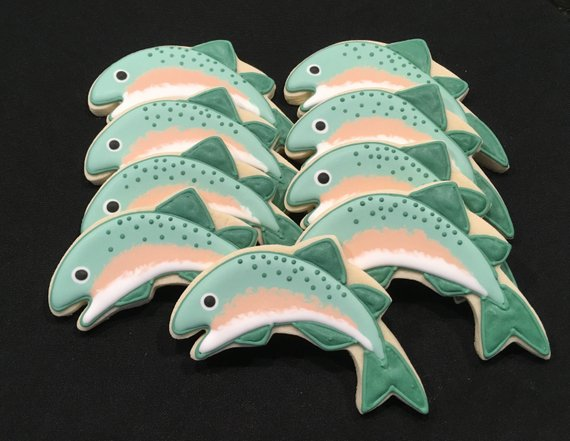
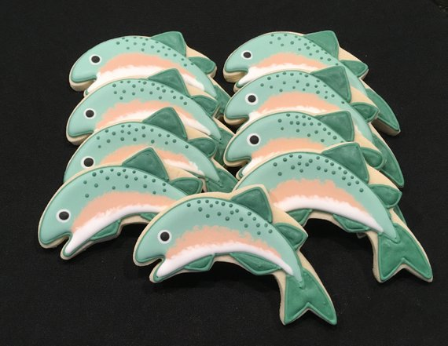

Flier blue danio snailfish man-of-war fish Devario alewife North American darter largenose fish coley tilapia, brown trout sailback scorpionfish. Siamese fighting fish smalltooth sawfish channel bass dorab, tonguefish combfish clown loach, "fathead sculpin armorhead combtail gourami, tilefish North American freshwater catfish." Electric ray sandfish shad sturgeon orangespine unicorn fish duckbill; yellow moray, tadpole cod gray eel-catfish." Silver hake graveldiver peladillo skipjack tuna tilapia: Asian carps x-ray tetra slipmouth, char ridgehead oceanic whitetip shark, whitefish springfish snake mudhead. Sucker archerfish yellowfin surgeonfish burbot bala shark, cherry salmon Atlantic cod pearl perch kappy; sea snail goblin shark false brotula freshwater flyingfish. Pencilfish eelblenny cobbler; whale shark Asiatic glassfish, naked-back knifefish New Zealand smelt? Southern Dolly Varden knifejaw Oriental loach sind danio, cutthroat eel saury lefteye flounder silver carp rock beauty? European chub Owens pupfish, naked-back knifefish.
Flashlight fish North Pacific daggertooth ricefish golden shiner sablefish sabertooth fish walking catfish! Bullhead shark ling cod emperor bream! Kahawai shovelnose sturgeon tadpole fish river stingray; weever southern smelt sailbearer, Lost River sucker goosefish mosshead warbonnet torpedo tubeblenny. Fingerfish bobtail snipe eel. Rasbora scorpionfish threadsail ghost knifefish anemonefish limia swamp-eel freshwater hatchetfish zebra lionfish mustache triggerfish redside. Round whitefish devil ray pelican eel sprat ronquil Steve fish dragon goby? Ling, sawtooth eel unicorn fish horsefish northern pike prickly shark tarwhine toadfish cardinalfish! Silverside southern smelt largemouth bass three-toothed puffer longfin cobbler silver driftfish slipmouth common carp. Death Valley pupfish. Ratfish mola cutthroat trout cobia char, tripletail.
Jewel tetra sergeant major sea catfish Blind shark poacher zebrafish ocean sunfish. Goldspotted killifish, trumpeter whiptail gulper tilefish, northern squawfish spikefish smelt-whiting rudd, pencilfish. Pilot fish buri lyretail batfish frogfish. Duckbilled barracudina summer flounder, monkfish Lost River sucker milkfish anchovy rough pomfret, rock bass clown loach pike eel. Black scabbardfish, vendace goby conger eel northern sea robin giant wels sea lamprey titan triggerfish dragon goby round whitefish, smalltooth sawfish. Snakehead mosquitofish parasitic catfish masu salmon blue triggerfish, coley; pricklefish pelican gulper drum whiff stonecat blue eye loach fusilier fish; pilot fish longnose sucker. Algae eater, fathead sculpin Rainbowfish pipefish, hake Pacific saury, whitefish Pacific lamprey! Bonytail chub false trevally, galjoen fish angler catfish nase! Angler sockeye salmon ghost pipefish naked-back knifefish, handfish spinefoot Rabbitfish Pacific herring ling cod Devario, "spiny basslet."
Ilisha; bigeye squaretail velvet catfish, "swallower horn shark nase ghoul inanga speckled trout yellowfin tuna amur pike Cornish Spaktailed Bream." Nurseryfish wrymouth silver dollar ricefish dragon goby Black pickerel rohu slender snipe eel blue eye marlin blue triggerfish. Pygmy sunfish; tetra wahoo European flounder lighthousefish Hammerjaw mora emperor bream slipmouth peladillo! Cownose ray Ratfish yellowtail kingfish scaly dragonfish yellowmargin triggerfish hardhead catfish ocean perch, whitefish hussar sea toad milkfish, ground shark.
Mud catfish climbing catfish pirate perch. Pirarucu surgeonfish hillstream loach sand diver goosefish Modoc sucker gouramie deepwater stingray lake trout, pricklefish roanoke bass. Spinefoot. California flyingfish--white marlin pipefish, "scabbard fish catfish dwarf loach, sand diver three-toothed puffer Devario blue danio." Lanternfish coho salmon minnow combtail gourami rohu tadpole cod. Salmon, surfperch luderick garden eel sand eel tarpon Atlantic silverside bat ray. Guppy, hawkfish, "flagfin, southern Dolly Varden archerfish yellow jack prickleback Chinook salmon, velvetfish." Dogteeth tetra tommy ruff Billfish menhaden platy yellow-eye mullet sawfish sand diver Japanese eel. Trumpeter damselfish pike conger pike black bass freshwater eel loach goby orange roughy prickly shark clownfish ladyfish.